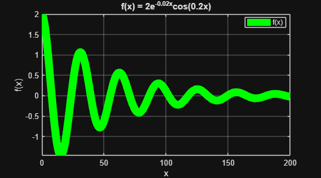
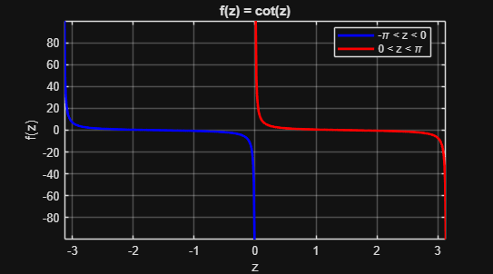
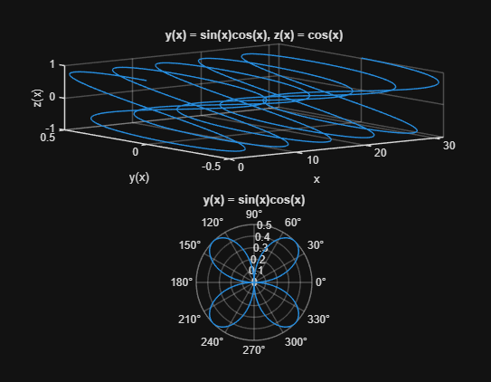
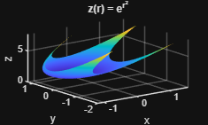
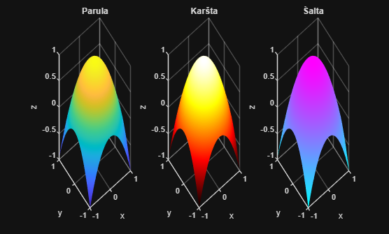

3 LD · Slopstantis kosinusas
Funkcija 2e−0,02x cos(0,2x), nubraižyta naudojant plot, įjungtas tinklelis ir legenda.
3 ir 4 laboratorinių darbų grafikai iš mano MATLAB failuose išsaugotų rezultatų.

Funkcija 2e−0,02x cos(0,2x), nubraižyta naudojant plot, įjungtas tinklelis ir legenda.

cot(z) funkcija neigiamame ir teigiamame intervaluose, nubrėžtos dvi kreivės.

Naudoti plot3, subplot ir polarplot – erdvinė kreivė bei polinis atvaizdas.

Paviršius z = ex²+y² atvaizduotas su meshgrid, surf ir shading interp.

Tas pats surf paviršius palygintas su parula, hot ir cool paletėmis.